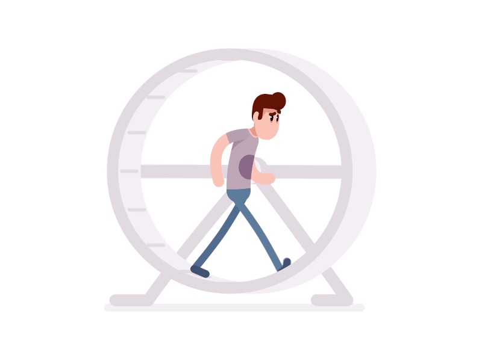

Are you hustling the right way? (how to stay on track)
Jun 5 '21 • Written by Yassen Shopov
📖 11 minute read
It’s no secret that feelings of burnout and inadequacy are common when you get overworked. It’s almost a universal truth that results are often achieved after short bursts of effort in our society, instead of being the product of routines and habits that don’t overwhelm us. As I’ve mentioned before in this article on how to avoid burnout, it’s easy to fall into the trap of hustle culture - just work your butt off and it’ll all work out in the end.
If only it worked like this.
The cost of hustling
I believe that most of our habits and routines that obstruct our progress are inherently taught to us in school. For example, I figured out that I tend to use unnecessarily long sentences with complex grammar. That comes directly from my experience of writing essay after essay for my English homework, where writing like this was a good thing. So now I have to actively try to unlearn this and write simpler sentences, so the reader, a.k.a. you, won’t get bored. We got short attention spans, it turns out.
Harmful ways of thinking about productivity are also direct products of most educational models.
If you ever caught yourself feeling like you’re in a hamster’s wheel, you’re not alone. In school, it often so happens that you’re several lessons in on a given subject and you’re still lacking the full understanding of what’s going on. It often happens with the more theoretical subjects (most of them, let’s be honest). In PE, it’s easier to get the point of correct breathing to make efficient push-ups, because otherwise, you won’t be able to do many of them. With trigonometry, let’s say, it’s not so black-and-white. And I was one of the smart kids, so I’m extra allowed to diss on maths.
You may be able to solve even the hardest trigonometric problems, go through formulas and memorize them easily, but motivation definitely diminishes fast over time, because … why do it? I still haven’t heard a proper explanation as to why high schoolers study trigonometry and its practical use-cases are so rare and niche that even the more scientifically inclined kids find it impractical. It’s a meme at this point that you won’t be calculating how much your groceries cost in the store in terms of sine and cosine, so why bother studying it?
But then, I went to uni and I figured out how trigonometry is actually useful for most engineering problems. Now I was able to see the purpose and was able to study it much more easily, knowing that if I didn’t know how to solve those basic questions, I would find the harder ones impossible to do. But it took quite a long time of hustling and doing homework before I figured out why I was actually meant to do that.
Opportunity costs
The key difference between constructive and destructive ‘hustling’ lies in the sense of purpose. In a perfect dream world, we would all know 100% of the time what we’re supposed to work on, and we would never have to work on stuff outside of that singular purpose. However, life is more colorful than that.
There will always be tasks you simply won’t want to do, and this doesn’t mean that you can just not do them. If you don’t like doing the dishes, the only way to make yourself do them is to either build discipline, make it a habit so it’s easier to get started, or just to imagine the alternative scenario of not doing them - your lazy self would be happy, but your future self would still have to get their hands dirty, and it would be even more bothersome.
However, if most of your tasks are default tasks, or are tasks set by somebody else other than you, or if you feel like everything you do is doing-the-dishes level of excitement, then you’re definitely hustling the wrong way.
Those feelings of burnout and lack of motivation can be symptomatic of a larger problem - lacking a sense of purpose, or working on the wrong things. However, symptoms are a good thing. Without them, you wouldn’t be able to diagnose yourself and find the proper ‘medication’. If you’re currently feeling overwhelmed and unmotivated, and it has been like this for a while, maybe you need to check your internal compass.
Are you working on the right things?
Are you on track with your initial strategy?
Does it feel like a ‘passion’ or a ‘hustle’?
Even if the task at hand is a necessary evil, e.g. something you need to do even if you don’t like it, for the greater good, there is still an opportunity cost associated with it.
When I write these blog posts, the first draft is usually the more exciting part. I throw ideas on the page and connect the dots. However, the larger chunk of time is always taken up by the editing, which makes the blog post into the polished version you’re currently reading. Yes, I could spend the time editing this blog post to write the rough drafts for 5 more articles, but none of them would result in a good product in the end without the necessary evil - editing. So yes, editing has the opportunity cost of not being able to do many other things for the same time, but the end result is worth the sacrifice. And the main question for you, as is the main topic of this article is: Are the things you’re currently doing worth the sacrifice/opportunity cost?
How do I make sure I stay on track?
It would be awesome if our initial goal remains the same throughout the whole project, but it’s often not the case. Most personal and passion-led projects are a creative form of exploration, where you change your plans a couple of times before you reach the end goal. Even if it is an entirely different end goal than the one originally planned.
It’s useful to stay in touch with your inner compass. Try and differentiate between the annoyance you feel when you think you’re working on the wrong thing (for example, when you’re studying for a subject that’s completely impractical to your life) and the annoyance you feel when a task is just too hard/boring but not necessarily pointless. At the time, even a minor discomfort can feel like the whole project is a lost cause, but it’s up to your personal perception to make the difference.
It’s a muscle to be trained, so it’s normal to hustle more than needed in the beginning, when you’re young. It’s easy to see that older folks aren’t lazy, they just tend to value their time more and only pick tasks with an opportunity cost they’re willing to pay.
And how does one stay in touch with their inner compass exactly?
Weekly and monthly and annual reviews
Even if you’re not business-oriented, you can sometimes find the benefit of perceiving yourself as the whole business - your personal business. And businesses tend to have a schedule for reviewing their progress so far and reflecting on it.
Many people journal, and this is a form of reviewing to speak of. The point is to reflect on a number of points, just to make sure you’re on track (or on the right track).
Here’s how I do my weekly reviews. Basically, I try to tend to and answer the following questions/points:
What were my accomplishments for the week?
In which ways could this week have been better?
Am I on schedule with my expectations for all active projects?
What’s planned to happen/be done next week?
Do I have any notes/emails/texts/notifications I haven’t taken care of already?
All in all, this is a process that takes time to get the hang of, but with experience you’ll find what works for you, so don’t be scared to change your methods midway through!
If you enjoyed this article, here are some follow-ups for you to read, including this article on choosing what to study in university and how to improve your time management skills.
Peace! 🏵
[10:30]
by Nathaniel Drew